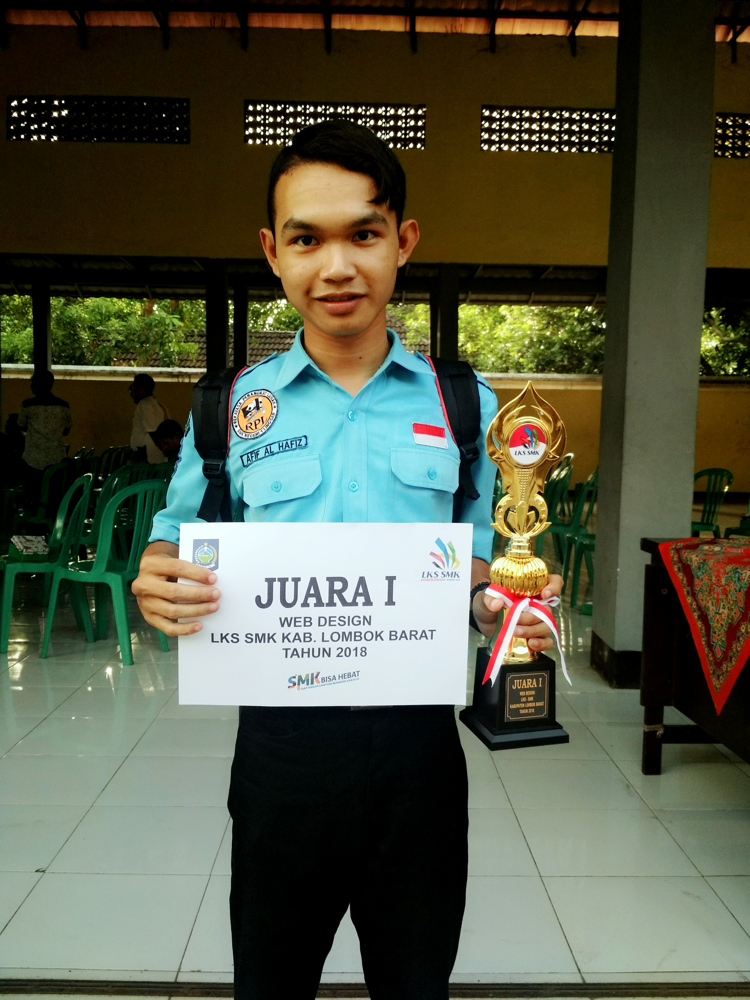
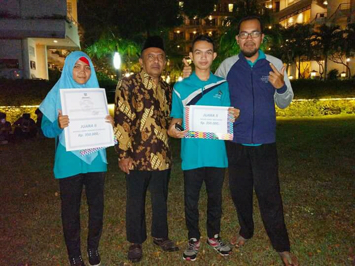
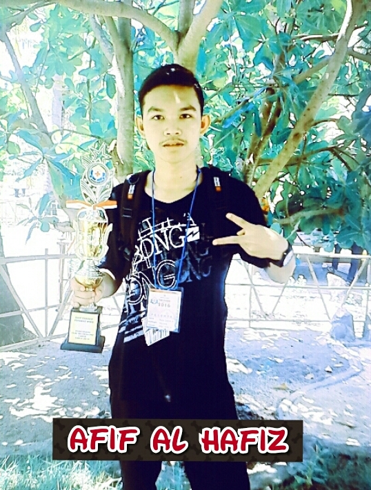
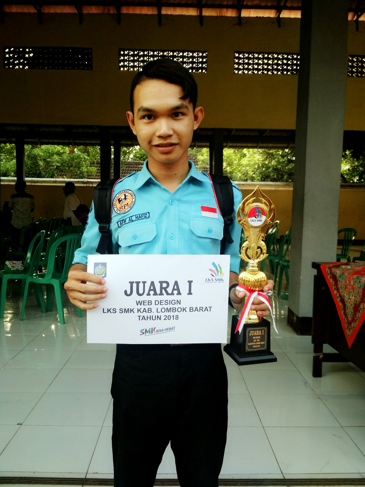
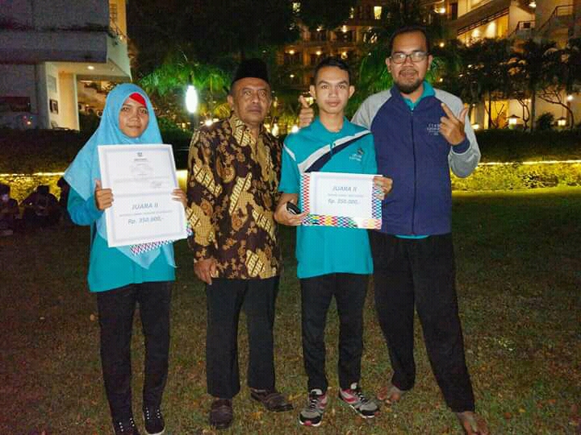
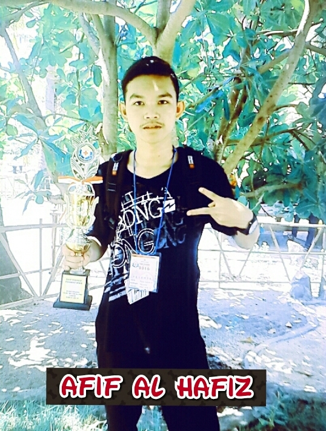

AFIF AL HAFIZ
Alamat : jln. Saribaye sakti, Des. Saribaye, Kec. Lingsar, Kab. Lobar, Prov. NTB Indonesia
Email : afif27111999@gemail.com
Keyakinan adalah kunci yang menjadi faktor utama dalam sebuah keberhasilan, Apa pun pekerjaan yang kamu geluti, cintailah dan syukurilah Hidup tak akan menjadi beban jika kau bisa menjalaninya dengan ikhlas.
  
 